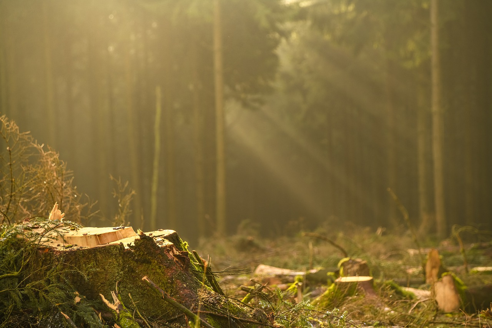

Trees and plants act as our planet’s lungs, “inhaling” carbon dioxide and then “exhaling” oxygen. This helps makes forests a potent antidote to climate change, but according to the assessment, we’ve destroyed a third of the planet’s forest cover in the last two centuries alone. The biggest culprits—the timber, agricultural, and biomass industries—show no signs of slowing down.

We log more than a million acres of Canada’s boreal forests each year to make single -use products like toilet paper. In South America, we burn some of the densest and most biologically diverse rainforests to make more room for agriculture and cattle ranching. In addition to oxygen, forests are vital to life on earth in myriad ways, supporting millions of species—from tapirs to tigers to owls to orangutans.